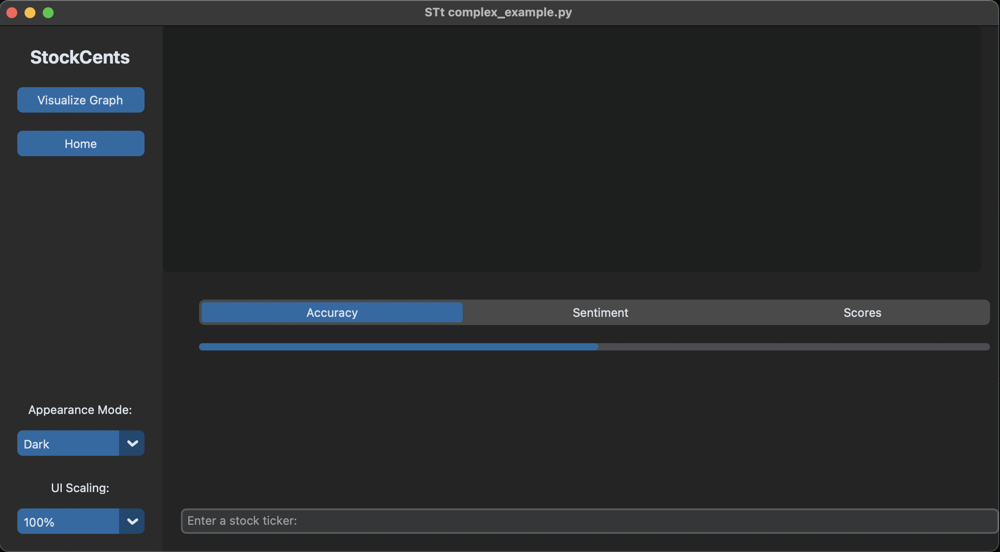
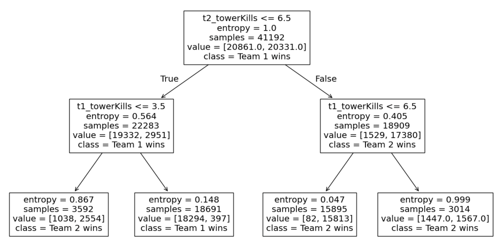
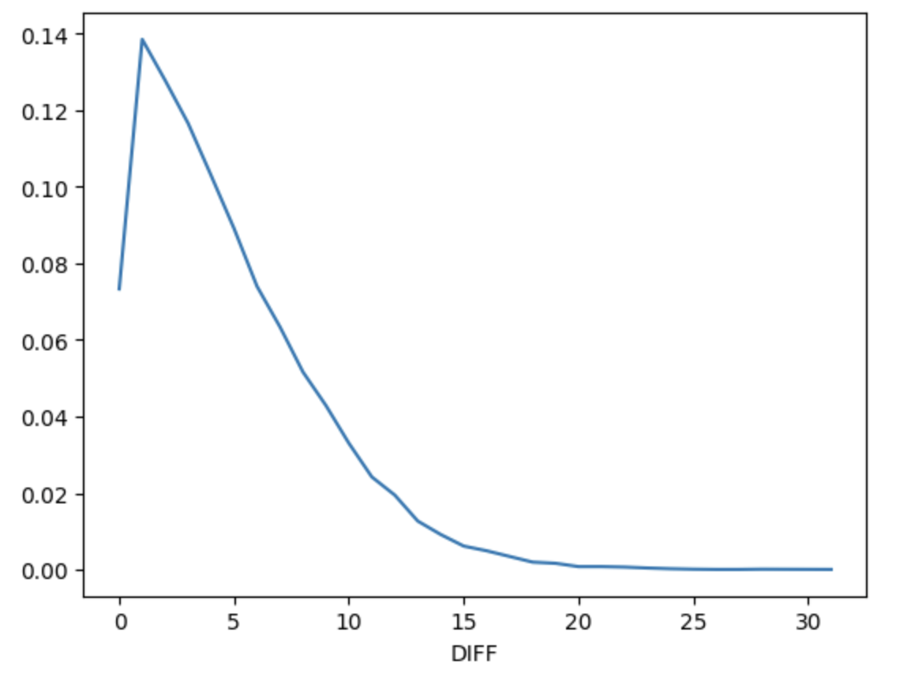
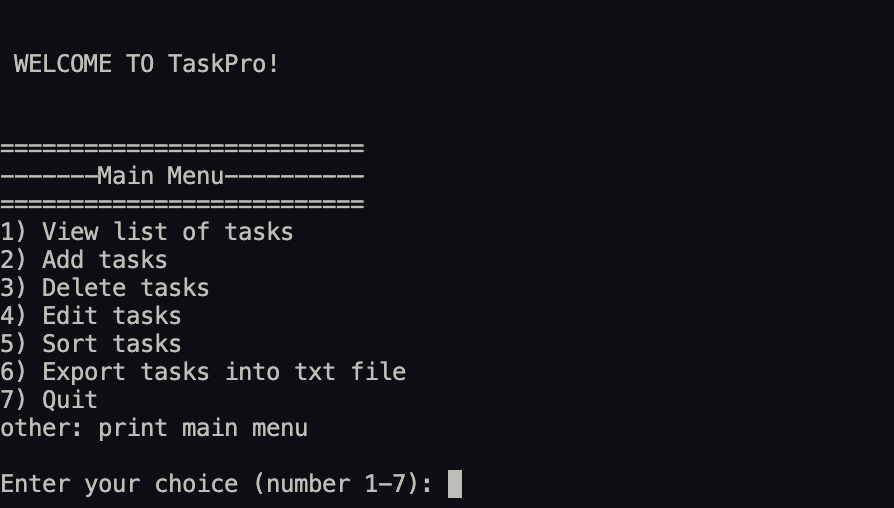

Projects
StockCents

Full-Stack application that utilizes sentiment analysis and RandomForestRegressor to
create predictions. Designed with bidirectional LSTM Neural Network.
LoL Prediction Model
 League of Legends prediction model curated through Kaggle dataset. Uses Decision Tree branching and GridSearchCV to train the model.
Weather Forecast Model
 Weather forecasting model that predicts the temperature in New York City. Uses a linear regression model, Ridge.
Task Manager

Entirely functional task manager built with C++ in terminal. Devised task features,
recurring deadlines, deadlines, and task editing with capability to handle 1000+ tasks.